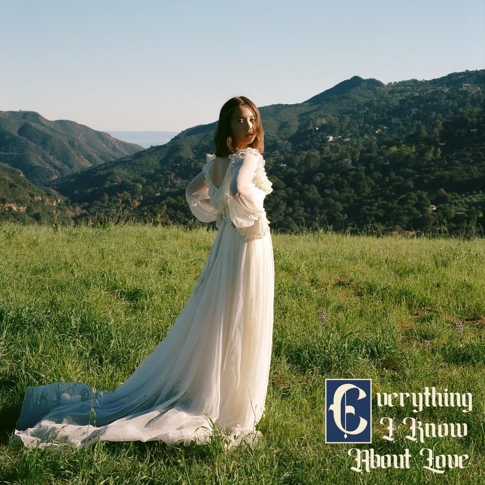
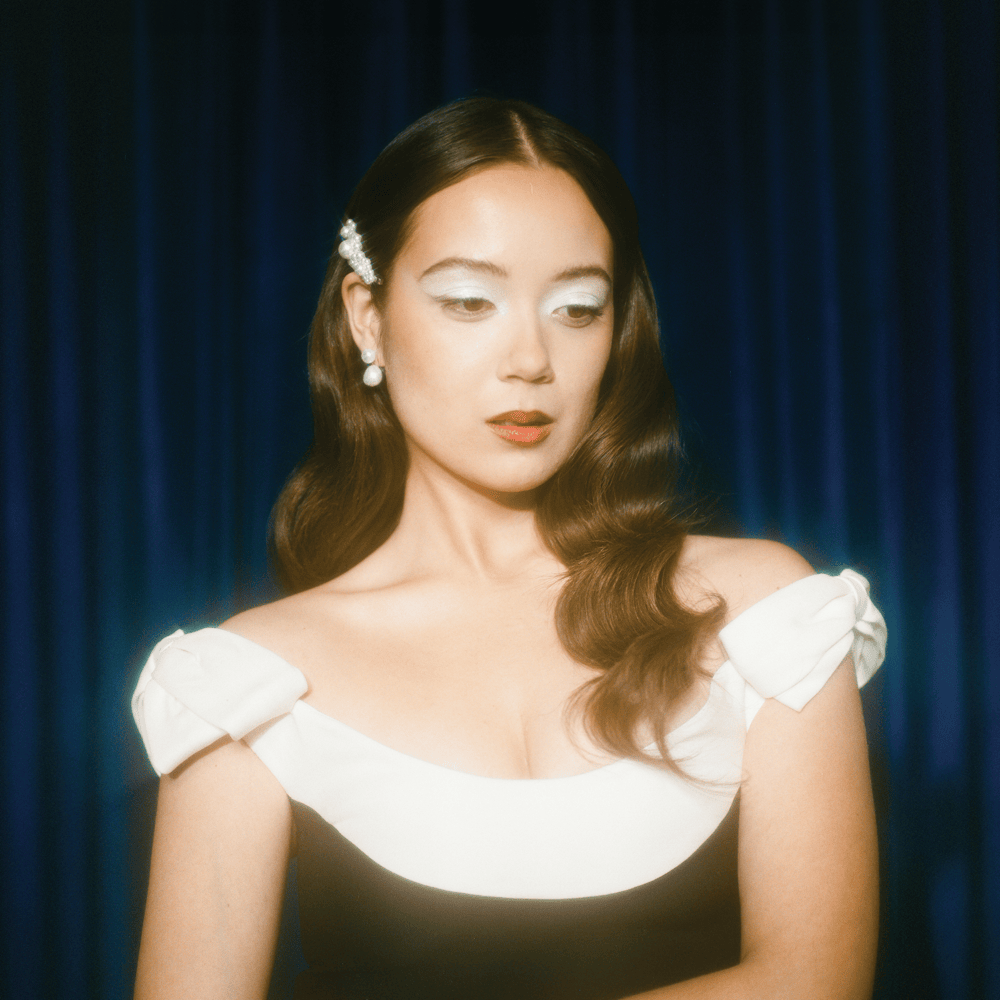
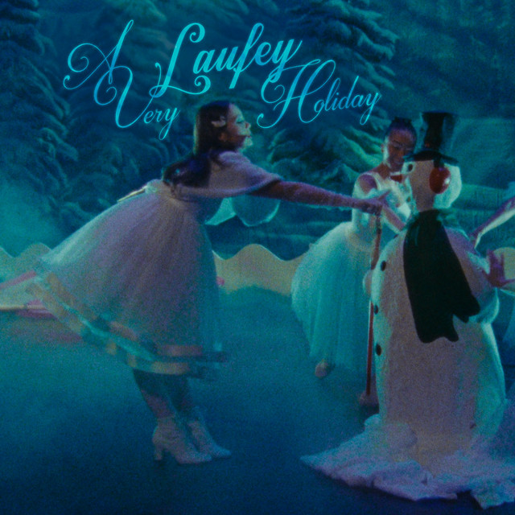
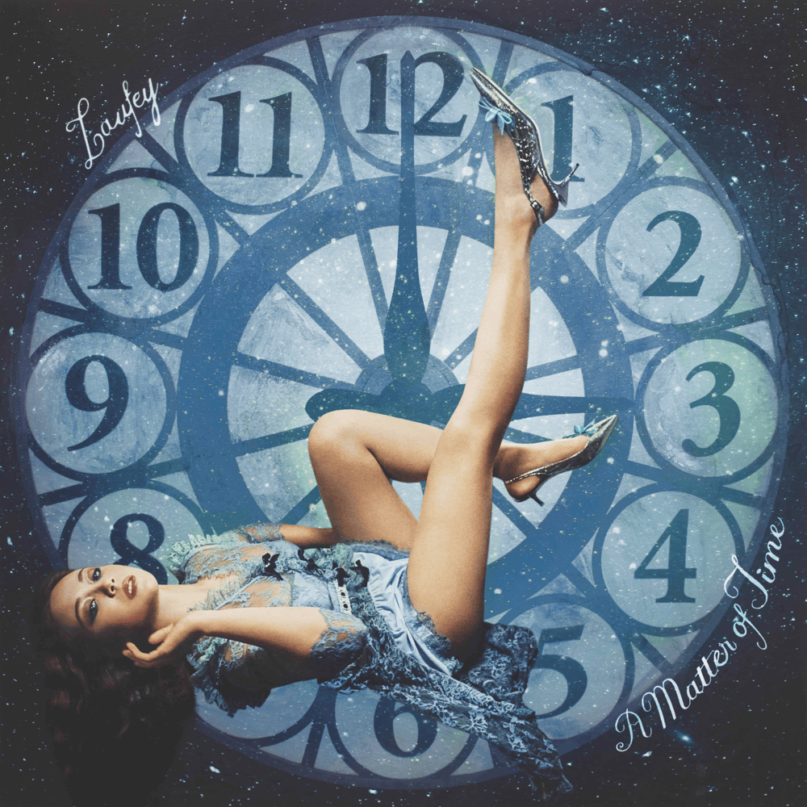
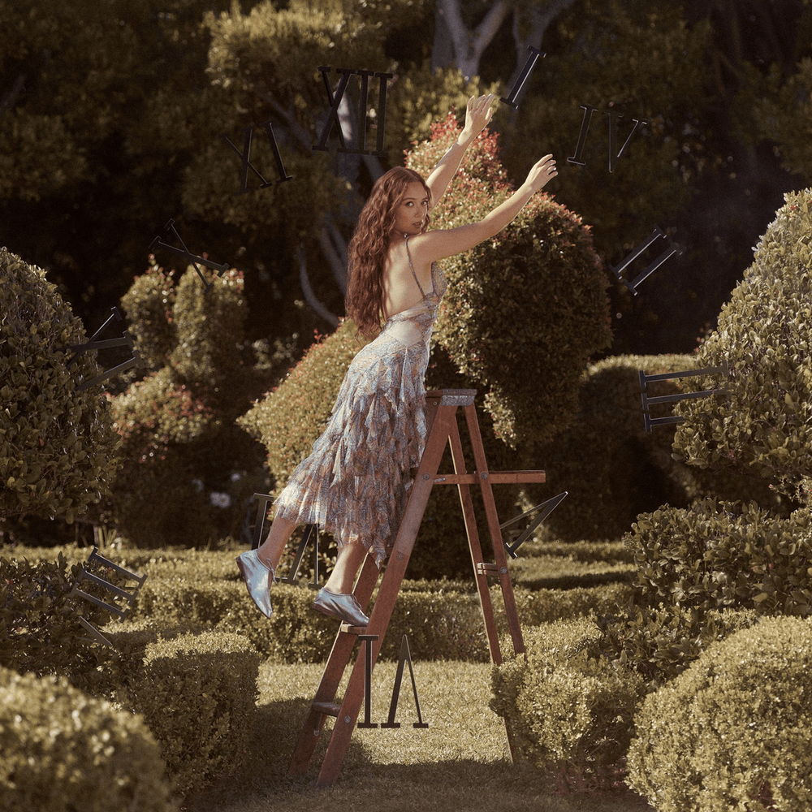

Jazz. Romance. Soft chaos.
Laufey Lín Bing Jónsdóttir , known mononymously as Laufey (/ˈleɪveɪ/ LAY-vay), is an Icelandic singer-songwriter and musician. Her musical style blends genres such as jazz pop, classical and bossa nova. Laufey began performing as a cello soloist with the Iceland Symphony Orchestra at age 15. She then emerged as a finalist in the 2014 edition of Ísland Got Talent (Iceland's Got Talent) and a semifinalist on The Voice Iceland in 2015.
Laufey's discography includes the EPs "Typical of Me" (2021) and "Everthing I know about love" (2022), as well as the studio album "Bewitched" (2023).




